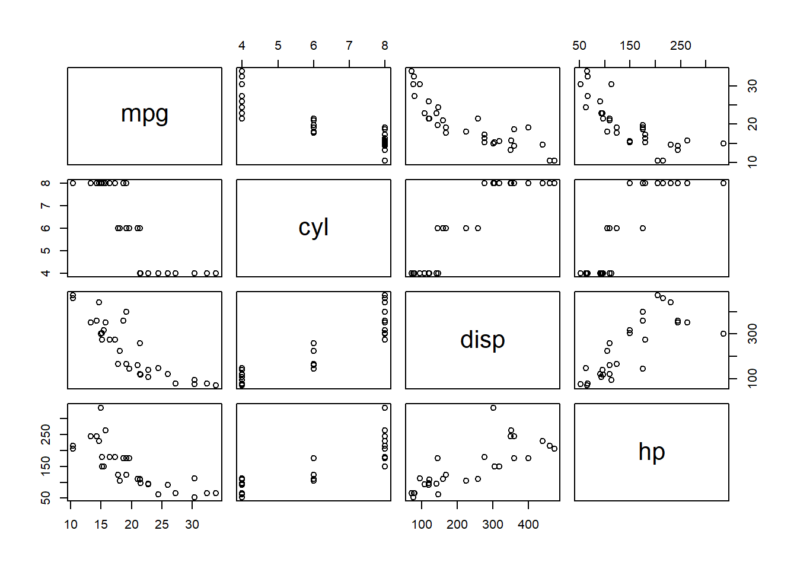

| mpg | cyl | disp | hp | drat | wt | qsec | vs | am | gear | carb | |
|---|---|---|---|---|---|---|---|---|---|---|---|
| Mazda RX4 | 21.0 | 6 | 160 | 110 | 3.90 | 2.620 | 16.46 | 0 | 1 | 4 | 4 |
| Mazda RX4 Wag | 21.0 | 6 | 160 | 110 | 3.90 | 2.875 | 17.02 | 0 | 1 | 4 | 4 |
| Datsun 710 | 22.8 | 4 | 108 | 93 | 3.85 | 2.320 | 18.61 | 1 | 1 | 4 | 1 |
| Hornet 4 Drive | 21.4 | 6 | 258 | 110 | 3.08 | 3.215 | 19.44 | 1 | 0 | 3 | 1 |
| Hornet Sportabout | 18.7 | 8 | 360 | 175 | 3.15 | 3.440 | 17.02 | 0 | 0 | 3 | 2 |
| Valiant | 18.1 | 6 | 225 | 105 | 2.76 | 3.460 | 20.22 | 1 | 0 | 3 | 1 |
1 Chapter 1 Title
Chapter Summary
This chapter introduces the LaTeX Thesis Template using Quarto. It covers the basic structure, explains how to customize the template for your needs, and provides guidance on formatting elements such as tables, figures, and mathematical expressions. By the end of this chapter, you will understand how to organize your thesis content and make the most of the template features.
1.1 Welcome and Thank You
Welcome to this LaTeX Thesis Template, using the LaTeX typesetting system and Quarto and based on the LaTeX thesis template MastersDoctoralThesis version 2.0 downloaded from LaTeXTemplates. This LaTeX document class was authored by Vel (vel@latextemplates.com) and Johannes Böttcher based on a style file by Steve R. Gunn from the University of Southampton (UK), department of Electronics and Computer Science.
Arnold et al. (1998)
1.2 A Short Math Guide for LaTeX
If you are writing a technical or mathematical thesis, then you may want to read the document by the AMS (American Mathematical Society) called, “A Short Math Guide for LaTeX”. It can be found online at AMS under the “Additional Documentation” section towards the bottom of the page.
1.2.1 Common LaTeX Math Symbols
There are a multitude of mathematical symbols available for LaTeX and it would take a great effort to learn the commands for them all. The most common ones you are likely to use are shown on this page.
You can use this page as a reference or crib sheet, the symbols are rendered as large, high quality images so you can quickly find the LaTeX command for the symbol you need.
1.3 About this Template
This LaTeX Thesis Template is originally based and created around a LaTeX style file created by Steve R. Gunn from the University of Southampton (UK), department of Electronics and Computer Science. You can find his original thesis style file at his site, here: http://www.ecs.soton.ac.uk/~srg/softwaretools/document/templates/.
Steve’s ecsthesis.cls was then taken by Sunil Patel who modified it by creating a skeleton framework and folder structure to place the thesis files in. The resulting template can be found on Sunil’s site here: http://www.sunilpatel.co.uk/thesis-template.
Sunil’s template was made available through LaTeXTemplates where it was modified many times based on user requests and questions. Version 2.0 and onwards of this template represents a major modification to Sunil’s template and is, in fact, hardly recognisable. The work to make version 2.0 possible was carried out by Vel (vel@latextemplates.com) and Johannes Böttcher.
1.4 What this Template Includes
1.4.1 Folders
Appendices – this is the folder where you put the appendices. Each appendix should go into its own separate qmd file. An example and template are included in the directory.
Chapters – this is the folder where you put the thesis chapters. Each chapter should go in its own separate qmd file.
Figures – this folder contains static figures for the thesis, i.e. figures that are not generated by code in the chapters.
1.4.2 Files
example.bib – this is file that contains all the bibliographic information and references that you will be citing in the thesis for use with BibTeX. You can write it manually, but there are reference manager programs available that will create and manage it for you. Zotero is popular and integrates with RStudio IDE if you use that.
MastersDoctoralThesis.cls – this is the class file that tells LaTeX how to format the thesis.
pdf in docs folder – this is your typeset thesis.
Frontmater folder – this has the files for the various front matter elements.
1.5 Filling in Your Information
Most of the personal information is found on in the _quarto.yml file.
- author – you; optionally add url
- supervisor – your supervisor; optionally add url.
- university – your university
- department – your department
- faculty – faculty name
- group – research group name (optional)
- abstract
1.6 The tex\before-body.tex File Explained
The tex\before-body.tex file contains the structure of the thesis and is a mix of Pandoc template and LaTeX code. The bits that look like $book.university$ say are Pandoc and are referencing variables in the _quarto.yml file. Knowing that, you should be able to figure out what is happening.
There are plenty of written comments that explain what pages, sections and formatting the LaTeX code is creating. Each major document element is divided into commented blocks with titles in all capitals to make it obvious what the following bit of code is doing. Initially there seems to be a lot of LaTeX code, but this is all formatting, and it has all been taken care of so you don’t have to do it.
Many of the sections have $if(...)$ so that the section is only included if you included information for that in _quarto.yml.
In the _quarto.yml, pdf: toc: false is used so that Quarto/Pandoc doesn’t add a table of contents. This template puts the table of contents before the abbreviations and symbols pages and Quarto/Pandoc doesn’t let us control where it puts the table of contents. So we have to add the TOC manually for pdf and pass in toc: false.
The list of figures and tables are all taken care of for you and do not need to be manually created or edited. The next set of pages are more likely to be optional and can be deleted since they are for a more technical thesis: insert a list of abbreviations you have used in the thesis, then a list of the physical constants and numbers you refer to and finally, a list of mathematical symbols used in any formulae. Making the effort to fill these tables means the reader has a one-stop place to refer to instead of searching the internet and references to try and find out what you meant by certain abbreviations or symbols.
The list of symbols is split into the Roman and Greek alphabets. Whereas the abbreviations and symbols ought to be listed in alphabetical order (and this is not done automatically for you) the list of physical constants should be grouped into similar themes.
The next page contains a one line dedication. Who will you dedicate your thesis to?
1.7 Adding Your Chapters and Appendices
Add your chapters and appendices to _quarto.yml. Note that the spacing is important as is the leading -.
1.8 Bibliography and Citations
Citations will be added and formatted automatically for you.
If you use the RStudio IDE, then you can link Zotero to RStudio and Quarto will find your citations for you when you enter @. This is in the visual editor mode. Make sure to search for videos on how to do this as using Zotero libraries will make your citation and bibliography management much easier.
In the text use @smith2000 to produce Smith (2000) add use [@smith2000, @jones1999] to produce (Smith 2000; Jones 1999). See the natbib cheatsheet for how to do other types of formatting for your in text citations. The bibliography style (classoption: "authoryear") is used for the bibliography and is a fully featured style that will even include links to where the referenced paper can be found online.
Wieman and Hollberg (1991)
1.8.0.1 A Note on bibtex
The bibtex backend used in the template by default does not correctly handle unicode character encoding (i.e. “international” characters). You may see a warning about this in the compilation log and, if your references contain unicode characters, they may not show up correctly or at all. One solution to this is to use the biber backend instead of the outdated bibtex backend. This is done by finding this in tex/in-header.tex: backend=bibtex and changing it to backend=biber. Google a bit to find information on this.
1.9 Thesis Features and Conventions
To get the best out of this template, there are a few conventions that you may want to follow.
1.9.1 Printing Format
This thesis template is designed for double sided printing (i.e. content on the front and back of pages) as most theses are printed and bound this way. Switching to one sided printing is as simple as adding "oneside" to classoptions: in the _quarto.yml file. The headers for the pages contain the page number on the outer side (so it is easy to flick through to the page you want) and the chapter name on the inner side.
The text is set to 11 point by default with single line spacing, again, you can tune the text size and spacing should you want or need to using the class options. The spacing can be changed similarly by replacing the "singlespacing" with "onehalfspacing" or "doublespacing" in the class options.
1.9.2 Using US Letter Paper
The paper size used in the template is A4, which is the standard size in Europe. If you are using this thesis template elsewhere and particularly in the United States, then you may have to change the A4 paper size to the US Letter size. This can be by editting geometry: in _quarto.yml in the pdf format section.
1.10 Tables
When you render your Quarto thesis to PDF, it will process LaTeX table code just fine. However, if you are doing that, I am guessing you would be writing your thesis in LaTeX not Quarto. So I will not discuss LaTeX tables. Instead here is how you create tables using R. Python and Julia users, you’ll have your own table packages but the idea will be similar.
```{r}
#| label: tbl-cars
#| tbl-cap: This is my caption.
knitr::kable(head(mtcars))
```The #| is what sets up our cross-references and you can then reference the table as @tbl-cars. Note in order for table numbering to work in Quarto, you must label your tables with the tbl- prefix.
This is Table 1.1.
See the Quarto manual for full examples and instructions.
1.11 Figures
Again we write in Quarto (markdown) not LaTeX for our figures. You can write in LaTeX if you really want but it would only be interpreted for the PDF output.
```{r}
#| label: fig-cars
#| fig-cap: This is my caption.
plot(mtcars[,1:4])
```The #| is what sets up our cross-references and you can then reference the table as @fig-cars.

This is Figure 1.1.
See the Quarto manual for full examples and instructions.
1.11.1 Typesetting mathematics
If your thesis is going to contain heavy mathematical content, LaTeX will make it look beautiful, for HTML or PDF output.
The Not So Short Introduction to LaTeX should tell you everything you need to know for most cases of typesetting mathematics. If you need more information, a much more thorough mathematical guide is available from the AMS called, A Short Math Guide to LaTeX.
1.12 In Closing
Good luck and have lots of fun!
This guide was written originally by
Sunil Patel: http://www.sunilpatel.co.uk}{www.sunilpatel.co.uk
and Vel: http://www.LaTeXTemplates.com
and heavily shortened and adapted for Quarto by Eli Holmes.